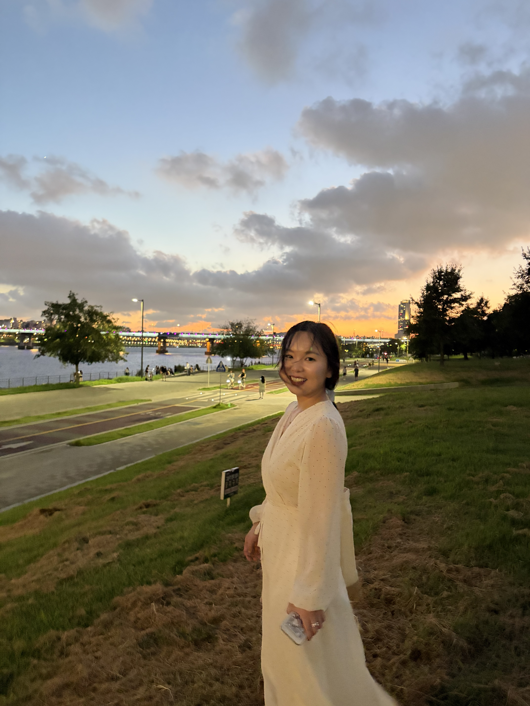

Advised by Prof. Sang-Im Lee-Kim
Email: heyu2021@hanyang.ac.kr
I am a Ph.D. student in the Department of Chinese Language and Literature at Hanyang University, working under the supervision of Prof. Sang-Im Lee-Kim. My research focuses on experimental phonetics and laboratory phonology, with a particular interest in the acoustic and articulatory realization of r-suffixation in Beijing Mandarin.
Prior to my doctoral studies, I received my B.A. in Chinese Language and Literature from Ocean University of China and my M.A. in Teaching Chinese as the Second Language from Beijing Language and Culture University. I then worked as a Chinese teacher at the School of International Education, Xi’an Jiaotong University for one year.
Phonetics · Laboratory Phonology · Articulatory Phonetics · Mandarin r-suffixation
Publications will be added soon.
Conference presentations will be added soon.
Email: heyu2021@hanyang.ac.kr